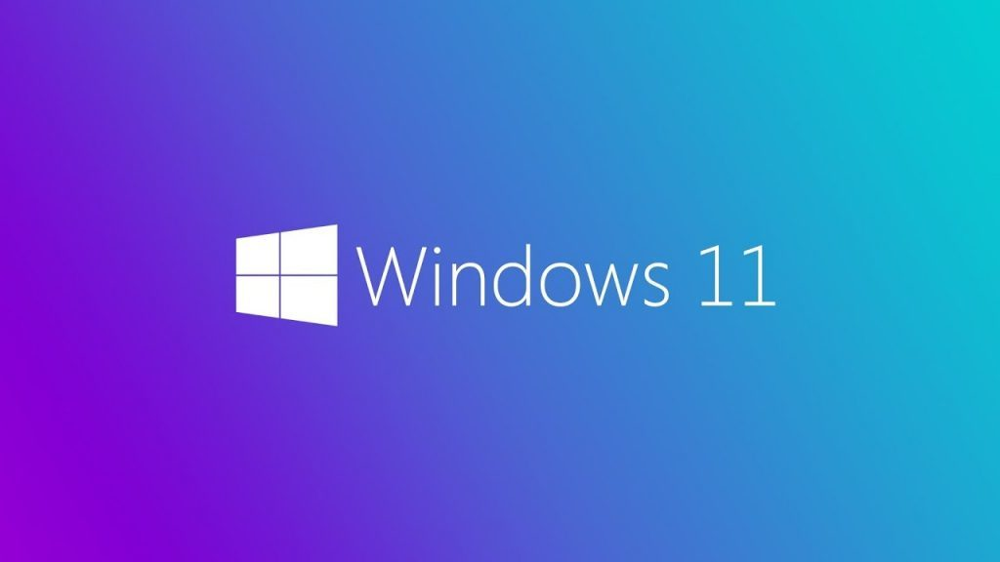
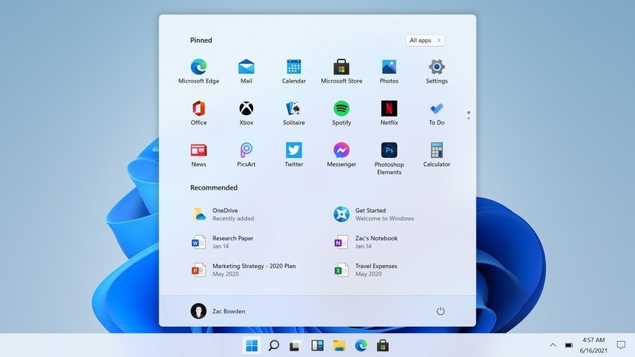

 Publicații precum The Verge și PC World au relatat despre noul Windows despre care pe site-ul chinez Baidu unde au apărut capturi de ecran.
Cele mai multe schimbări vor fi sesizate în zona task bar-ului, iar butonul de Start și meniul său au fost redesenate. De exemplu, butonul de Start este mult simplificat față de Windows 10, dar o mare schimbare ține că este plasat central în partea de jos a ecranului. Cei care vor să-l pună în locul tradițional din stânga pot face acest lucru extrem de ușor.
 O schimbare vizuală ține de colțurile rotunjite care vor fi vizibile la meniurile contextuale, la aplicații, la File Explorer și la meniul de Start. Apare și un nou ”icon” pe task bar: Widgets. La capitolul noutăți pot fi adăugate și o serie de animații.
Este însă o versiune preliminară și probabil că multe se vor schimba în lunile următoare. Datele StatCounter arată că 78% dintre PC-uri din lume rulează Windows 10 și 16% rulează Windows 7. În Europa cota Windows 10 este 83%.